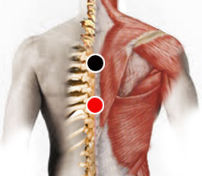

Dorsales
Pares
dorsal - dorsal
dorsal 2 - dorsal 2

* En algunas guías el par aparece como dorso - dorso. Aquí cambiamos el nombre para no confundirlo con los dorsos de las manos.
Generalidades:
Reservorio Universal Rastrear nuevamente todos los puntos.
Temas relacionados: